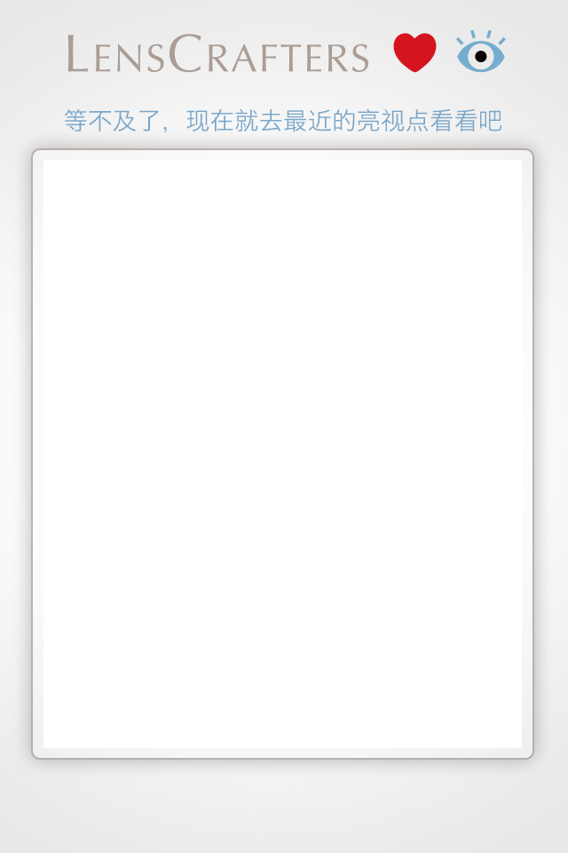

<!DOCTYPE html>
<html lang="en">
<head>
    <meta charset="UTF-8">
    <meta name="viewport" content="width=device-width,minimum-scale=1.0,maximum-scale=1.0">
    <link rel="stylesheet" href="css/index.css">
    <link rel="stylesheet" href="css/reset.css">
    <script type="text/javascript" src="http://api.map.baidu.com/api?v=2.0&ak=32f17d2ee72f43e31a28fe2bfe840b96"></script>
    <script src="js/jquery-1.7.2.min.js"></script>
    <title>做赢家要眼快，不服来战</title>
</head>
<body>
    <div class="main">
        <!-- 10月20日至10月31日，11月17日至11月30日投放  -->
        <!--  -->
        <!-- 11月1日至11月16日投放  -->
        
        <div id="allmap" class="map">
            
        </div>
        <a class="close" href="information.html"></a>
    </div>
</body>
<script>
/*平板，电脑，笔记本滚动模块*/
$(document).ready(function(){
   showPosition2(113.329, 23.14);
    //getLocation();

});
/*地图模块*/
var lon,lat;        
var map = null;
/*地理定位*/
function getLocation(){
    if (navigator.geolocation){
        navigator.geolocation.getCurrentPosition(showPosition,showError);
    }else{
       alert("该浏览器不支持地理定位!");
    }
}
            
/*电脑端测试函数*/
function showPosition2(posX, posY){
    map = new BMap.Map("allmap");            // 创建Map实例

    var point = new BMap.Point(posX, posY);    // 创建点坐标
    map.centerAndZoom(point,15);                     // 初始化地图,设置中心点坐标和地图级别。
    map.enableScrollWheelZoom(); 
    GetNearDealers(posX, posY);
    var mkr = new BMap.Marker(posX,posY);
    map.addOverlay(mkr);
}

function showPosition(position){
    map = new BMap.Map("allmap");            // 创建Map实例
    lon = position.coords.longitude;         //获取经度
    lat = position.coords.latitude;          //获取纬度
    var point = new BMap.Point(lon, lat);    // 创建点坐标

    map.centerAndZoom(point,15);                     // 初始化地图,设置中心点坐标和地图级别。
    map.enableScrollWheelZoom();                  //启用滚轮放大缩小，默认禁用
    GetNearDealers(lon,lat);
    /*var mkr = newBMap.Marker(newBMap.Point(lon,lat));
    map.addOverlay(mkr);*/
    var icon = new BMap.Icon('images/me.png', new BMap.Size(32, 51), {
        anchor: new BMap.Size(10, 30)
        });
    var marker = new BMap.Marker(point,{
            icon: icon
        });    
    map.addOverlay(marker);
}

function showError(error){
    switch(error.code){
        case error.PERMISSION_DENIED:
          alert("用户拒绝对地理位置要求!");
          break;
        case error.POSITION_UNAVAILABLE:
          var cName = localStorage.getItem("cty_jx");
          /*alert("位置信息是不可用,我们将对您的城市——"+cName+"进行定位!");*/
          if(cName == "北京"){
             showPosition2(116.404, 39.915);
          }else if(cName == "上海"){
             showPosition2(121.444, 31.20);
          }else if(cName == "广州"){
             showPosition2(113.329, 23.14);
          }
          break;
        case error.TIMEOUT:
          alert("获取用户位置请求超时!");
          break;
        case error.UNKNOWN_ERROR:
          alert("发生了一个不明错误!");
          break;
    }
}
function GetNearDealers(lon,lat){
    var url='http://ama.adwo.com/advmessage/dealer/getDealerJsonP.action?advid=30125&lng=' + lon + '&lat=' + lat + '&radius=5000';
    $.ajax({
        url: url,
        cache: false,
        dataType : 'jsonp',
        jsonpCallback: "eventcallback",
        data: {
          lng : lon,
          lat : lat,
          radius : 5000
        },
        success: setDealers
    });
}
function setDealers(j){
    var marker,point;
    if(j[0].length==0){
        alert("您附近近距离可能没有店！");
        return;
    }
    for (var i = 0; i < j[0].length; i ++) {
        point = new BMap.Point(j[0][i].longitude, j[0][i].latitude);
        var icon = new BMap.Icon('images/map_pot.png', new BMap.Size(32, 40), {
        anchor: new BMap.Size(10, 30)
        });
        marker = new BMap.Marker(point,{
            icon: icon
        });
        map.addOverlay(marker);
        marker.ind = i;
        marker.addEventListener("click", function(){ 
        var content ="<div style='font-size:12px;width: 200px;margin-top:10px;'>" + "<h4 style='margin:0 0 5px 0;padding:0.2em 0;color:#0000ca;'>"+j[0][this.ind].dealerName+"</h4>" /*+ "" + "<p style='margin:0;line-height:1.5;font-size:8px;text-indent:2em;-webkit-text-size-adjust:none;'>电话<a style='color:#000;' href='tel:"+j[0][this.ind].dealerTel+"'>："+j[0][this.ind].dealerTel+"</a></p>*/+"<p style='margin:0;line-height:1.5;font-size:8px;text-indent:2em;-webkit-text-size-adjust:none;'>地址："+j[0][this.ind].dealerAddress+"</p>" + "</div>";
        var infoWindow = new BMap.InfoWindow(content,{enableMessage:false});         
        this.openInfoWindow(infoWindow);
        });
    }
}
</script>
<script src="js/common.js"></script>
</html>